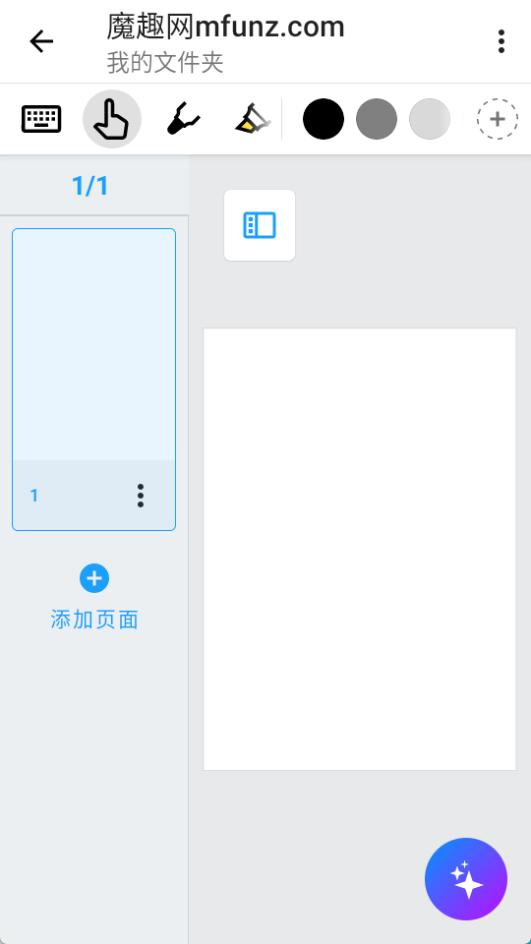
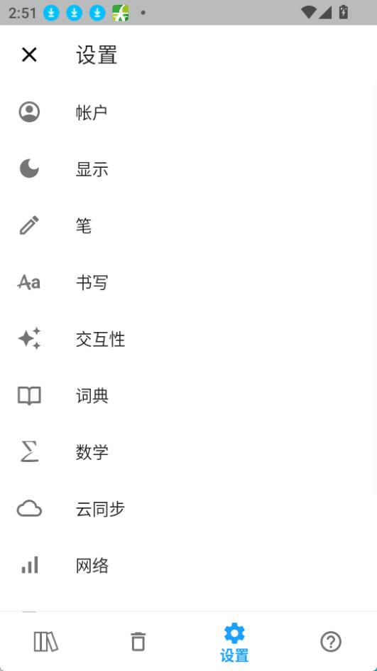

Nebo 到底值不值得掏钱？一份手写笔记的付费决策账本
免费版给什么、付费版多什么、订阅还是买断——把 Nebo 这笔账算明白，帮你三秒对号入座。
它到底值不值得掏钱？
这是我用了 Nebo 免费版三个月后，坐在 iPad 前问自己的第一个问题。
Nebo 是 MyScript 家的手写笔记应用，主打 Interactive Ink 手写识别、完美形状转换、PDF 批注这些功能——它的官网上有完整的功能清单和使用示例。如果你是那种拿着 Apple Pencil 在平板上记笔记的人，大概率听过它的名字——毕竟能把随手画的歪歪扭扭的圆自动变成规整几何形状，这个噱头在笔记圈传了好几年。
但噱头归噱头，真到掏钱的时候就得冷静了。我把这笔账拆成定价、算账、替代、结论四块，你对照自己的使用强度，三秒就能知道该不该买单。

定价拆解：免费版给什么，付费版多什么
先说清楚，Nebo 在 2025 年改名了——移动端从 Nebo 改成了 MyScript Notes，Windows 端还是叫 Nebo，但背后是同一个团队、同一个 MyScript 账号、同一套数据格式。改名的同时定价策略也调整了，这是很多人搞混的地方。
免费版能用到什么程度
免费版的核心功能其实给得相当大方，几乎所有你能想到的手写笔记基础能力都在里面：四种笔记载体（笔记本、白板、文档、PDF）、Interactive Ink 手写识别（66 种语言，含简体中文）、手写转文字、笔势编辑（勾除、下划线、断点、连接）、荧光笔、套索工具、完美形状转换、手写数学公式识别、PDF 导入批注、搜索手写内容、云同步（iCloud / Google Drive / Dropbox）、页面背景定制、所有笔刷类型——这些全是免费的。
真正的免费版限制只有一个硬门槛：每本笔记本限 5 页。
这个 5 页限制的具体细节值得澄清一下：它只针对新建的笔记本，你已经写了 5 页的旧页面不会被删；白板和 PDF 模式不受页数限制；而且你可以创建多个 5 页以内的笔记本——相当于不是"总共只能写 5 页"，而是"每本 5 页封顶"，用多个小本子就能绕开大部分场景。
免费版砍掉的东西集中在三块：AI 功能（总结、解释、测验、闪卡、聊天全部不可用）、高级导出格式（Word .docx、LaTeX、PowerPoint 三种没有，只能导出 PDF、图片、纯文本）、以及笔记无限增页（刚好跟 5 页限制是一回事）。
付费版的三个档位
付费端有三种选择，价格差异挺大：
- 月订阅：约 $5/月，月付
- 年订阅：约 $15/年，年付（比月付省 75%）
- 终身买断：约 $15-20 一次性，永久拥有
一个容易忽略的点：年订阅和终身买断的价格几乎一样，年付约 $15，买断约 $15-20——你只要用超过 1 年，买断就划算，这个定价策略挺鸡贼，但算算账就知道该选哪个。
跨平台是两个独立购买
这是最容易踩的坑：移动端（iOS / Android）和 Windows 端是两个独立的付费产品，互相不通用。
也就是说，你在 App Store 买了 MyScript Notes 的终身版，可以在 iPhone + iPad + Android 平板上用（最多 10 台设备），但 Windows 上的 Nebo 得单独去 Microsoft Store 买，或者从官方下载拿到安装包。反过来也一样，Windows 买了不包含移动端。唯一的好消息是数据格式兼容，同一个 MyScript 账号能云同步。
MyScript 没法绕过 Apple / Google / Microsoft 的商店授权机制，这个锅它背不了，但作为用户得提前知道，别买了一个以为能通吃全平台。

算账：三类人分别怎么算
定价摆在那里，得结合你自己的使用强度来算才有用。我把用户分成轻度用、主力用、重度用三类，每类算一笔。
轻度用户：偶尔记点东西
如果你是那种"平板吃灰，偶尔拿出来记个会议纪要、画个流程图"的人——用 Nebo 的频率大概是每周 1-2 次，每次半小时以内。
这种情况免费版完全够用。5 页的限制对你来说不是限制——你开会写两页、画个流程图三页，开完会这个笔记本就归档了，新建一个本子继续用就行。核心识别、完美形状、PDF 批注这些免费版全给，你根本碰不到付费功能的边界。
唯一可能让你偶尔心痒的是 AI 功能——比如考前想让 AI 帮你做测验，但轻度用户根本没到考前狂复习的场景，这个需求不存在。
轻度用户的结论：永远不用付。 省下 $20 买断钱，买一杯奶茶喝到撑。
主力用户：每天都在写
如果你是大学生、考研党、或者需要每天用平板做笔记的职场人——Nebo 是你日常工作流的一部分，每天用 1-2 小时。
这种情况你大概率会撞上 5 页限制。比如一个课程笔记本，一周的课下来很容易写超过 5 页，免费版就卡住了。这时候就得二选一：要么频繁新建小本子把内容拆碎，要么付费解锁无限页。
先算时间账：你花在 Nebo 上的时间，假设每天 1 小时，一年就是 365 小时。买断 $20 的话，每小时成本不到 6 美分——换算成人民币大概四毛钱一小时。这个价钱够便宜吧？
再算功能账：Word 导出。如果你的笔记需要交付成正式文档（比如课程报告、项目方案），免费版只有 PDF 和图片，Word 是刚需。导出 Word 这个功能本身就值回票价了。
AI 功能对主力用户来说是加分项而非必选项——总结笔记、考前测验这些确实好用，但免费版撑到你觉得"没它不行"再买也不迟。
主力用户的结论：先把免费版用满 2-3 个月，如果 5 页限制开始让你不爽、或者发现导出 Word 是高频需求，直接上终身买断，别犹豫。$20 的价格换一年以上的使用权，每小时成本四毛钱，比你买一杯咖啡便宜。
重度用户：平板是生产工具
如果你是那种"平板 + Apple Pencil = 我的全部生产力"的人——可能是设计师用白板画原型、是学者用 PDF 批注做文献综述、是技术人员用文档模式写代码注释和架构图。每天使用 3 小时以上，Nebo 是你工作流里不可替代的一环。
这种情况根本不用算账，直接终身买断。理由有三：
第一，5 页限制会在第一周就把你卡死。重度用户一个白板的内容就可能远超 5 页，免费版等于让你手脚被绑住干活。
第二，高级导出是生命线。PowerPoint 导出能把完美形状直接变成可编辑的 PPT 形状对象——这个功能在"头脑风暴完直接导出给老板"的场景下价值连城，省掉的重复劳动时间远不止 $20。LaTeX 导出对写论文的人来说更是刚需，具体操作和注意事项去nebo文档里翻一下就清楚了。
第三，AI 功能在重度使用下能省大量总结时间。一篇 10 页的笔记让 AI 自动提炼要点，比你自己读一遍省出 30 分钟，一年下来就是 180 小时——这个时间成本值 $200 都不止。
重度用户如果还在用免费版，要么是没意识到自己的需求等级，要么就是还没把 Nebo 真正用起来。

替代方案：不付这笔钱有什么别的路
免费版能用是能用，但 5 页限制始终是个膈应。如果不想为 Nebo 花钱，还有几条替代路线：
路线一：换同类免费工具
Notion 和 Obsidian 是笔记圈的两大免费选项，但它们的手写能力跟 Nebo 不是一个量级——Notion 的手写转文字需要另外装插件，Obsidian 的手写基本是图片没有识别。GoodNotes 的免费版比 Nebo 限制更多，Notability 现在也改成订阅制了。
如果你对手写识别和完美形状有硬需求，没有一个真正免费的替代品。所有能打出手写识别的应用，要么限制页数要么限制识别次数，本质上都是 Nebo 免费版那一套。
路线二：降低使用频率
把一个大笔记本拆成多个 5 页小笔记本，归档后新建。这个方法在轻度和主力阶段其实是可行的——比如一个课程一本笔记本，写满 5 页就归档，新建下一本。只要你不介意笔记本数量变多，云同步里翻起来稍有点麻烦，这个 workaround 能让免费版继续用下去。
代价是整理成本——期末复习的时候你得翻好几个笔记本，不如一本完整的笔记方便。但如果这个代价比 $20 可接受，那就继续免费。
路线三：等促销或用旧版
MyScript 偶尔会做促销，买断价格能砍到一半左右。另外，改名前已经买过 Nebo 终身版的老用户自动获得 MyScript Notes 终身使用权——等于免费升级，这波福利别错过，在 App Store 搜索 MyScript Notes 安装后点"恢复购买"就行。
结论：三秒对号入座
最后给你一张表，对照自己的情况一秒做决定：
| 你的情况 | 该怎么做 |
|---|---|
| 偶尔用用，每周 1-2 次 | 永远免费版，5 页限制不影响 |
| 每天都用，还没到 5 页卡住 | 先免费版，等真卡了再买，不急 |
| 每天都用，已经被 5 页限制烦了 | 直接终身买断 $15-20，划算 |
| 需要导出 Word / PPT / LaTeX | 必须买断，免费版没有这个功能 |
| 考前想做 AI 测验和闪卡 | 用 7 天免费订阅试用期，考完再取消 |
| 改名前买过 Nebo 终身版 | 已经免费升级，装 MyScript Notes 点"恢复购买" |
| 只有 Windows 设备 | 单独买 Microsoft Store 版，跟移动端不通用 |
还有一个隐藏选项：iOS 和 Android 都提供 7 天免费订阅试用——你可以先开订阅（月付），用满 7 天体验完整功能，觉得值再改成终身买断，觉得不值就取消订阅转回免费版。试用期内随时取消不扣钱，这个羊毛可以薅。
总结一下：Nebo 的定价策略本身挺合理——免费版给了足够多的核心功能让你体验，付费版的门槛（5 页限制、AI、高级导出）也是精确瞄准了真正的重度用户。$15-20 的终身买断价格放在同类手写笔记应用里算便宜的，毕竟 Notability 订阅年付就超过这个数了。真正需要犹豫的不是"买不买"，而是"什么时候买"——把免费版的 5 页用满，等它真的开始让你不爽的那天，再掏这 $20 也不迟。
顺便提一句，这套 Nebo 资料在 GitHub、Gitee 和 GitCode 三个仓库都有同步，国内网络环境下访问更稳定。